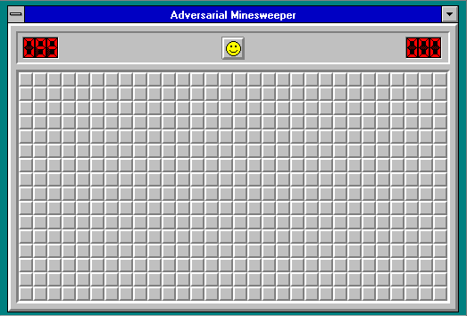

Minesweeper
Minesweeper
What the heck is Minesweeper?
Minesweeper is a logic puzzle video game genre generally played on personal computers. The game features a grid of clickable tiles, with hidden "mines" (depicted as naval mines in the original game) scattered throughout the board. The objective is to clear the board without detonating any mines, with help from clues about the number of neighboring mines in each field. Variants of Minesweeper have been made that expand on the basic concepts, such as Minesweeper X, Crossmines, and Minehunt. Minesweeper has been incorporated as a minigame in other games, such as RuneScape and Minecraft's 2015 April Fools update.

Gameplay
Gameplay
In Minesweeper, hidden mines are scattered throughout a board, which is divided into cells. Cells have multiple possible states:
- Unopened tiles (cover the board at the start of the game, can also be made by removing flags)
- Numbered tiles (can show 1-8)
- Blank tiles (no mines are on the diagonal/adjacent to the tile)
- Flagged tiles (right-clicking an unopened tile)
- (?) Question marked tiles (right-clicking a flagged tile; only exists in certain implementations)
An unopened cell is blank and clickable, while an opened cell is exposed. Flagged cells are unopened cells marked by the player to indicate a potential mine location; some implementations make flagged cells unopenable to reduce the risk of uncovering a suspected mine.
A player selects a cell to open it. If a player opens a cell containing a mine, the game ends in a loss. Otherwise, the opened cell displays either a number, indicating the number of mines diagonally and/or adjacent to it, or a blank tile (sometimes shown as a 0), and all adjacent cells will automatically be opened. This may cause a chain reaction; any blank tiles opened by other blank tiles open the surrounding tiles too. Players can also flag a cell, visualised by a flag being put on the tile, to denote that they believe a mine to be in that place. Flagged cells are still considered unopened, and may be unflagged.[1] In some versions of the game, when the number of adjacent mines is equal to the number of adjacent flagged cells, all adjacent non-flagged unopened cells can be opened by both left and right-clicking (regardless of if any tiles are mines or not), a process known as chording.
History
History
According to TechRadar, Minesweeper was created by Microsoft in the 1990s,[5] but Eurogamer commented that Minesweeper gained a lot of inspiration from a "lesser known, tightly designed game", Mined-Out by Ian Andrew for the ZX Spectrum in 1983. According to Andrew, Microsoft copied Mined-Out for Microsoft Minesweeper.

The Microsoft version made its first appearance in 1990, in Windows Entertainment Pack, which was given as part of Windows 3.11. The game was written by Robert Donner and Curt Johnson. Johnson stated that Microsoft Minesweeper's design was borrowed from another game, but it was not Mined-Out, and he does not remember which game it was.


In 2001, a group called the International Campaign to Ban Winmine campaigned for the game's topic to be changed from landmines.[5] The group commented that the game "is an offence against the victims of the mines". A later version, found present in Windows Vista's Minesweeper, offered a tileset with flowers replacing mines as a response.
The game is frequently bundled with operating systems and desktop environments, including Minesweeper for IBM's OS/2, Microsoft Windows, KDE, GNOME and Palm OS.[8] Microsoft Minesweeper was included by default in Windows until Windows 8 (2012).[9] Microsoft replaced this with a free-to-play version of the game, downloadable from the Microsoft Store.
Variations
Variations
Variants of Minesweeper have been made that expand on the basic concepts and add new game design elements. Minesweeper X is a clone of the Microsoft version with improved randomization and more statistics,and is popular with players of the game intending to reach a fast time.[6] Arbiter and Viennasweeper are also clones, and are used similarly to Minesweeper X.[6] Crossmines is a more complex version of the game's base idea, adding linked mines and irregular blocks.[5] BeTrapped transposes the game into a mystery game setting.There are several direct clones of Microsoft Minesweeper available online.
Minesweeper was made part of RuneScape through a minigame called Vinesweeper. The non-Japanese releases of Pokémon HeartGold and SoulSilver contained a variation of both Minesweeper and Picross.[10] The video game Minecraft released a version of Minesweeper in its 2015 April Fool's update.[11] The HP-48G graphing calculator includes a variant called "Minehunt", where the player has to move safely from one corner of the playfield to the other. The only clues given are how many mines are in the squares surrounding the player's current position. Google search includes a version of Minesweeper as an easter egg, available by searching the game's name.
A logic puzzle variant of minesweeper, suitable for playing on paper, starts with some squares already revealed. The player cannot reveal any more squares, but must instead mark the remaining mines correctly. Unlike the usual form of minesweeper, these puzzles usually have a unique solution. These puzzles appeared under the name "tentaizu" (天体図), Japanese for a star map, in Southwest Airlines' magazine Spirit in 2008–2009.

Tentaizu Puzzle
Online, non-rectangular

3D

Hexagonal

Triangular

Multiple mines in cells
Competitive Play
Competitive Play
Competitive Minesweeper players aim to complete the game as fast as possible. The players memorize patterns to reduce times. Some players use a technique called the "1.5 Click", which aids in revealing mines, while other players do not flag mines at all. The game is played competitively in tournaments. A community of dedicated players has emerged; this community was centralized on websites such as Minesweeper.info.[6] As of 2023, the fastest time to complete all three difficulties of Minesweeper is 32.88 seconds by Ju Ze-En in 2022.
Current World Record
Computational Complexity
Computational Complexity
In 2000, Sadie Kaye published a proof that it is NP-complete to determine whether a given grid of uncovered, correctly flagged, and unknown squares, the labels of the foremost also given, has an arrangement of mines for which it is possible within the rules of the game. The argument is constructive, a method to quickly convert any Boolean circuit into such a grid that is possible if and only if the circuit is satisfiable; membership in NP is established by using the arrangement of mines as a certificate. If, however, a minesweeper board is already guaranteed to be consistent, solving it is not known to be NP-complete, but it has been proven to be co-NP-complete. In the latter case, however, minesweeper exhibits a phase transition analogous to k-SAT: when more than 25% squares are mined, solving a board requires guessing an exponentially-unlikely set of mines. Kaye also proved that infinite Minesweeper is Turing-complete.
Minesweeper is Hard
References + Credits
References + Credits

Designer: Erin Lee
Creative Director: Jane Zhang
Text Source: Wikipedia
Interaction Foundations - Fall 2023